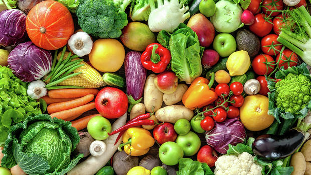

Nutrition, nourishment, or aliment, is the supply of
materials - food - required by organisms and cells
to stay alive. In science and human medicine,
nutrition is the science or practice of consuming and
utilizing foods.
What is nutrition?

As molecular biology, biochemistry, and genetics advance, nutrition has become more focused on metabolism and metabolic pathways - biochemical steps through which substances inside us are transformed from one form to another.
Nutrition also focuses on how diseases, conditions, and problems can be prevented or reduced with a healthy diet.
Similarly, nutrition involves identifying how certain diseases and conditions may be caused by dietary factors, such as poor diet (malnutrition), food allergies, and food intolerances.
Dietitian vs. nutritionist
A registered dietitian nutritionist (RD or RDN) studies food, nutrition, and dietetics through an accredited university and approved curriculum, then completes a rigorous internship and passes a licensure exam to become a registered dietitian.
Dietetics
Dietetics is the interpretation and communication of the science of nutrition; it helps people make informed and practical choices about food and lifestyle in both health and disease.
Part of a dietician's course includes both hospital and community settings. Dietitians work in a variety of areas, from private practice to healthcare, education, corporate wellness, and research, while a much smaller proportion work in the food industry.
A dietitian must have a recognized degree or postgraduate degree in nutrition and dietetics and meet continuing education requirements to work as a dietitian.
Nutrition
Nutrition is the study of nutrients in food, how the body uses nutrients, and the relationship between diet, health, and disease.
Major food manufacturers employ nutritionists and food scientists.
Nutritionists may also work in journalism, education, and research. Many nutritionists work in the field of food science and technology.